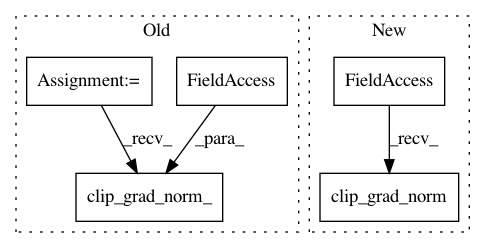

03a57decde62c76783ef7e2288bd61bc87f6e266,fairseq/optim/fp16_optimizer.py,FP16Optimizer,clip_grad_norm,#FP16Optimizer#Any#,148
Before Change
def clip_grad_norm(self, max_norm):
Clips gradient norm and updates dynamic loss scaler.
self._sync_fp16_grads_to_fp32()
grad_norm = utils.clip_grad_norm_(self.fp32_params.grad.data, max_norm)
// detect overflow and adjust loss scale
overflow = DynamicLossScaler.has_overflow(grad_norm)
self.scaler.update_scale(overflow)
After Change
def clip_grad_norm(self, max_norm):
Clips gradient norm and updates dynamic loss scaler.
self._unscale_grads()
grad_norm = self.wrapped_optimizer.clip_grad_norm(max_norm)
// detect overflow and adjust loss scale
overflow = DynamicLossScaler.has_overflow(grad_norm)
self.scaler.update_scale(overflow)
In pattern: SUPERPATTERN
Frequency: 3
Non-data size: 5
Instances
Project Name: pytorch/fairseq
Commit Name: 03a57decde62c76783ef7e2288bd61bc87f6e266
Time: 2018-12-24
Author: myleott@fb.com
File Name: fairseq/optim/fp16_optimizer.py
Class Name: FP16Optimizer
Method Name: clip_grad_norm
Project Name: pytorch/fairseq
Commit Name: 84b7686438a055812b856a7c177843b1e8ee1777
Time: 2020-03-25
Author: namangoyal@devfair0110.h2.fair
File Name: fairseq/optim/fairseq_optimizer.py
Class Name: FairseqOptimizer
Method Name: clip_grad_norm